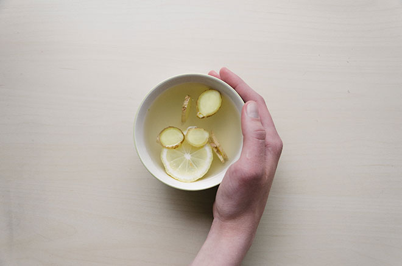

Hey all, this week in Genesis – published on Sunday for the first time ever (more by accident, than planning) – there’s a whole lot happening including a new featured content plugin from Robin Cornett, new themes (including a new theme on StudioPress), plus the beta release of Genesis 2.4.
So grab your coffee or beverage of choice and join me as we run through the best of everything happening this week in Genesis.
Genesis 2.4 beta
Hot on the heels of Genesis 2.3, this week sees the release of the Genesis 2.4 beta.
Get it! https://t.co/ZlB3f8ZzNo#GenesisWP
— Nathan Rice (@nathanrice) September 7, 2016
Thanks to a lot of hard work from Gary Jones and others!
Remember all those PRs I did for Genesis? Most of them got into the 2.4 release, now in beta:https://t.co/ECg7nxdXs6
Enjoy!— Gary Jones (@GaryJ) September 7, 2016
A whole lotta names going into the #genesiswp 2.4 release as contributors. FTW.
— Brian Gardner (@bgardner) September 6, 2016
Nathan Rice gave his reaction too.
#GenesisWP 2.4 is the first release that I can remember where I didn’t have the most code contributions. pic.twitter.com/xnDHtrUkCo
— Nathan Rice (@nathanrice) September 8, 2016
If you’d like to try the beta (not recommended on a production site) grab the Genesis Beta Tester plugin now.
Themes
Another week, another great new theme on StudioPress and this week’s its Elegance, a third party theme from Stephanie Hellwig.
If you don’t know Stephanie she’s a fantastic designer / developer, who’s been a regular here on This Week in Genesis, so it’s great to see her work reaching a wider audience.
Elegance Theme by @stephanehellwig Introduces Your Photography with Grace & Style #genesiswp https://t.co/heZxRJ86PR pic.twitter.com/W0tepy9ekI
— StudioPress (@studiopress) September 8, 2016
Anita, aka TheCre8tiveDiva, launches Isabelle, a new theme aimed at fashionistas and beauty bloggers, in honour of her mum.
For my Mom! "Introducing Isabelle! A Magazine Style Theme for the Genesis Framework" https://t.co/wx9AEOeT9q #genesiswp #wordpress #bloggers
— Anita C. (@TheCre8tiveDiva) September 2, 2016
A tease of the Scope theme from one of my favourite Genesis designer / developers, Frank over at WPStudio.
I'm excited to share a shot of the theme I’m working on Scope is a blogging theme with a masonry layout #genesiswp pic.twitter.com/dDjc9Ow825
— WPStudio (@wpstudiowp) September 6, 2016
Lindsey Riel releases a revamp of her Pretty Sweet theme.
Jesse Petersen plans to launch a developer starter theme for his GenesisTheme project in the next week.
My developer starter theme is coming in next 7 days. Sign up @ https://t.co/rqiiGNJFSV for a launch coupon only for subscribers. #genesiswp
— Jesse Ⓦ Petersen (@jpetersen) September 9, 2016
Showcase
Gorgeous site from Jamie Mitchell for we-are-scout.com
Had the privilege of redesigning and redeveloping the highly respected design blog of We Are Scout https://t.co/UmWxd2kTuw #genesiswp
— Jamie Mitchell (@jamiejmitchell) September 6, 2016
Emily White and her usual partner in crime Greg Young with a new site for livingwhole.org
Launched this new #genesiswp design last week w/ @hbgreg. Couldn't ask for a better client than @meglivingwhole. https://t.co/nz72Dem5WR
— Emily White (@emwhitedesigns) September 6, 2016
Stephanie Hellwig for summitgymnasticsclub.com
Excited to launch the Summit Gymnastics Club website https://t.co/JXqP65hYeS #genesiswp #WordPress #designer
— Stephanie Hellwig (@stephanehellwig) September 6, 2016
Kevin Whelan for streamlinerg.com
I recently launched a new client website using a custom Genesis theme. Link: https://t.co/CTy9SkIBez #genesiswp pic.twitter.com/O5OvLCgqiv
— Kevin C. Whelan (@kevincwhelan) September 9, 2016
New WooCommerce Genesis site from Hristo Pandjarvo for braveonewear.com
Finishing another project with #woocommerce and #genesiswp! https://t.co/17ZqNwdMEK
— Hristo Pandjarov (@pandjarov) September 8, 2016
Callia Web for cambridgefoodcollective.com
Delighted to share our client's launch: @CamFoodHub serves up local artisan food https://t.co/NDGnylyW54 #genesiswp pic.twitter.com/pn4JPsldmv
— Callia Web (@CalliaWeb) September 7, 2016
Jörgen Löw with a nice use of Digital Pro for his website naabar.se
Check out my new company website https://t.co/zRob15YcNL built on #genesiswp #WordPress pic.twitter.com/3jC7dESjzF
— Jörgen Löw (@mcleaf) September 4, 2016
ChurchPress with a new site for fsbcg.org
We’re to announce the release of another #churchwebsite with https://t.co/9YcT98drzA launching this week. #genesisWP #exodustheme
— ChurchPress (@churchpressco) September 11, 2016
Podcasts
Jackie D’Elia is back with episode 3 of Rethink.fm, on mastering client communications.
New on https://t.co/vUGfVnMBds, episode 3 of @jdelia's Rethink.fm on Mastering Client Communications https://t.co/eEKzdcPUhy
— GenesisWPguide (@GenesisWPguide) September 8, 2016
Tonya Mork of Know The Code, chats to hosts Brian Gardner and Lauren Mancke over on the latest episode of StudioPress.fm on building an online education business.
Come listen to my #StudioPressFM interview with @bgardner and @laurenmancke. Let's talk about #GenesisWP https://t.co/R1fDwqn11G
— Tonya Mork (@hellofromTonya) September 7, 2016
Best of the rest
A new featured content plugin from one of the Genesis community’s finest, Robin Cornett.
Yay! A great (much needed) featured content plugin from @robincornett – Six/Ten Press Featured Content. https://t.co/LIKLeIjAAh #genesiswp
— Mike Hemberger (@JiveDig) September 6, 2016
Ginger Coolidge with a nice tutorial on rocking MailChimp merge tags with the popular Genesis eNews Extended plugin.
The power of MailChimp merge tags w/Genesis eNews Extended https://t.co/gBOIjNfTpo #genesiswp
— Ginger Coolidge (@gscoolidge) September 7, 2016
Chris Mcintosh with an update on his Genesis starter theme, Bolt Pro.
Updated the Foundation / #genesiswp starter theme I've been working on. Getting closer! Renamed to "Bolt Pro" https://t.co/yOPNgOLKxU
— Chris Mcintosh (@akamac) September 6, 2016
Brian Gardner with a tutorial on how to customise the footer of his (free) new Twenty Seven Pro theme (and if you didn’t grab it already, make sure do!)
How to customize the Twenty Seven Pro theme footer — https://t.co/u1WcpJNDCg #genesiswp pic.twitter.com/9sW4Ix4qm4
— Brian Gardner (@bgardner) September 6, 2016
Anita on how to add an affiliate disclaimer widget to your blog posts.
Add an “Affiliate Disclaimer” Widget to Your Blog Posts https://t.co/Oju9yzMLwn #wordpress #genesiswp #blogger #affiliatemarketing
— Anita C. (@TheCre8tiveDiva) September 6, 2016
Sridhar on adding a footer navigation menu in Genesis.
Footer Navigation Menu in Genesis:https://t.co/sxoP5VBNHP#GenesisWP pic.twitter.com/qrB7wgJkKm
— Sridhar Katakam (@srikat) September 8, 2016
And finally…
A big shout and big love to all of the Genesis fan enjoying Circles Conference these last few days!
Very nice @bgardner you did great! #genesiswp @studiopress pic.twitter.com/JfzDyH9JCR
— Stephanie Hellwig (@stephanehellwig) September 8, 2016
The #genesiswp crowd rockin' it 80's style at the #circles2016 party. pic.twitter.com/r4AcqVKPGR
— Emily White (@emwhitedesigns) September 9, 2016
PS If you enjoyed this week’s round-up please consider subscribing below. I send one, occasionally two, emails a week and it really means a lot to have your support. Thanks!